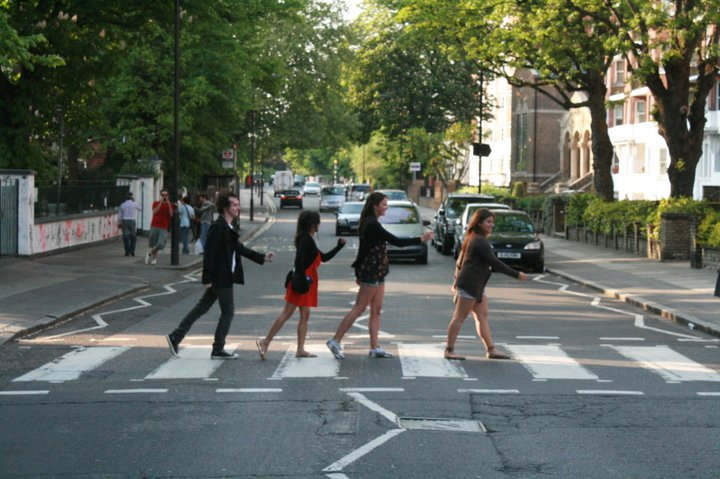

Exploring London: A Comprehensive Travel Guide
What to See
London, the vibrant capital of the United Kingdom, is a melting pot of history, culture, and modern attractions. From iconic landmarks to hidden gems, there's always something new to discover. Whether you're interested in art, theater, shopping, or food, London offers a diverse array of experiences for every traveler.
A Brief History of the City
Founded by the Romans over two millennia ago, London has evolved into one of the world's most influential cities. It has witnessed significant historical events—from medieval times to the modern era—and its rich history is evident in its architecture, museums, and cultural traditions.
Carl's London Story
In April 2011, I touched down in London with two friends—Andrew, a fellow musician from Perth, and Melissa from Melbourne. It was all of our first time in Europe, and London felt like the perfect starting point. The city was buzzing, not just with its usual energy but with something extra—the upcoming Royal Wedding of Prince William and Kate Middleton.
With the Australian dollar at an all-time high, everything felt surprisingly affordable, which only added to the excitement. We threw ourselves into the experience, balancing tourist must-sees with the alternative side of London. One of the first stops was Camden—my personal holy ground as an indie rock fan. The markets, the street art, the music venues—it was the London I had imagined. Stepping into legendary indie rock bars, I felt like I was part of something bigger, soaking up the raw, unpolished energy of the scene.
But of course, we couldn’t leave without doing the classic tourist rounds. We visited Buckingham Palace, where the crowds were already swelling in anticipation of the wedding. And then, as a die-hard Beatles fan, I had one mission—Abbey Road. What seemed like a simple idea turned into a hilarious challenge. It took about an hour, a lot of patience, and some teamwork with fellow tourists, but eventually, we got the iconic crosswalk photo. Standing outside Abbey Road Studios, knowing that some of the greatest music in history was made behind those doors, was a surreal moment.
Beyond the music, London had a personal significance for me. My mum was originally from Bristol, but she had spent time in London. Walking through these streets, knowing she had once been here too, added a layer of nostalgia to the trip.
And then, there was the wedding. On the day, the entire city came alive. Streets were packed, people waved flags, and the atmosphere was electric. We joined the masses outside, watching the spectacle unfold in real time. Whether you were a royalist or not, it was impossible not to get swept up in the excitement of history being made.
Looking back, those two weeks in London were the perfect mix of adventure, nostalgia, and pure excitement. It was a city that felt larger than life—a place where indie rock, Beatles nostalgia, and royal history collided. And for my first taste of Europe, it couldn’t have been more unforgettable.
Top 10 Attractions
- The British Museum: Home to a vast collection of world art and artifacts.
- The Tower of London: A historic castle housing the Crown Jewels.
- Buckingham Palace: The official residence of the Queen.
- The London Eye: A giant Ferris wheel offering panoramic views of the city.
- Big Ben and the Houses of Parliament: Iconic symbols of London's political heritage.
- Trafalgar Square: A vibrant public square with cultural significance.
- Westminster Abbey: A Gothic church and UNESCO World Heritage site.
- Camden Market: A bustling market known for eclectic shops and food stalls.
- St. Paul's Cathedral: An architectural masterpiece by Sir Christopher Wren.
- The Tate Modern: A modern art gallery housed in a former power station.
What to Bring
London's weather can be unpredictable, so it's wise to pack layers and a waterproof jacket. Comfortable walking shoes are essential for exploring the city. Don't forget a universal travel adapter for your electronics, and if you plan to use public transport extensively, consider getting an Oyster card or contactless payment method.
Currency
The currency used in London is the British Pound Sterling (£). Credit and debit cards are widely accepted, but it's useful to have some cash on hand for smaller vendors and markets. ATMs are readily available throughout the city.
Best Time to Visit
The best time to visit London is during late spring (April to June) and early autumn (September to October), when the weather is mild and the crowds are smaller. While summer is lively and winter brings its own charm, planning your trip around these periods can enhance your experience.
Fun Facts
- London is home to over 170 museums, many offering free admission.
- The Tube, London’s underground railway system, is the oldest in the world (opened in 1863).
- More than 300 languages are spoken in London, showcasing its vibrant diversity.
- Big Ben is actually the name of the bell inside the clock tower, not the tower itself.
- London was the first city in the world to have an underground railway.
Follow My Adventures
Stay connected and follow my journey: